Principais Titulos
BRASILEIRÃO 1980
Com dois gols de Zico e um de Nunes, o Flamengo
conquista o seu primeiro campeonato Brasileiro!
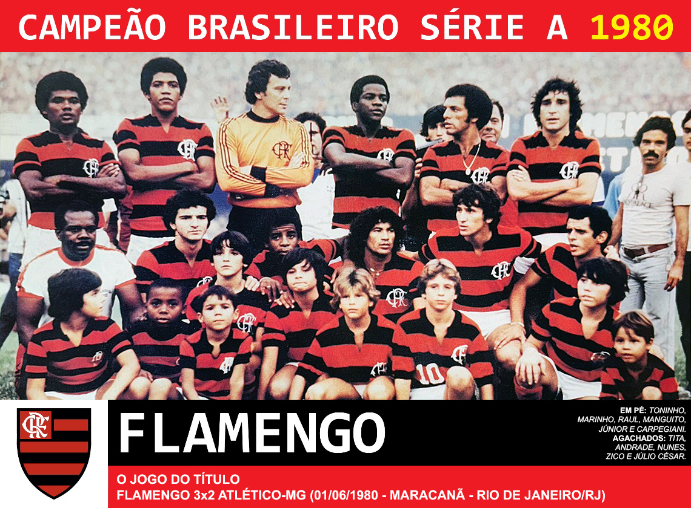LIBERTADORES 1981
Com dois gols de Zico, o Flamengo vence o Cobreloa
e ganha a primeira Libertadores de sua história.
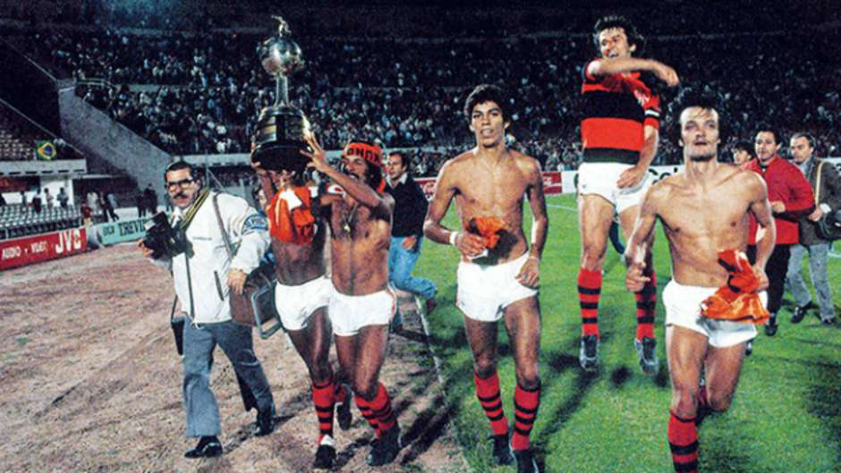MUNDIAL 1981
No mesmo ano da gloriosa conquista da América, o Flamengo
conquista também o mundo!

BRASILEIRÃO 1982
Em 1982 o Flamengo conquistava o seu
bi campeonato Brasileiro

BRASILEIRÃO 1983
O Flamengo é tri campeão com goleada
encima do Santos!

BRASILEIRÃO 1987
No dia 13/12/1987, o Flamengo entrou em campo de baixo
de chuva para ser tetracampeão brasileiro
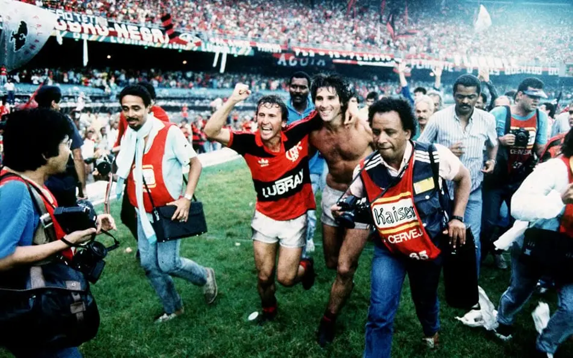COPA DO BRASIL 1990
O Flamengo é campeão invicto da segunda edição
da Copa do Brasil!
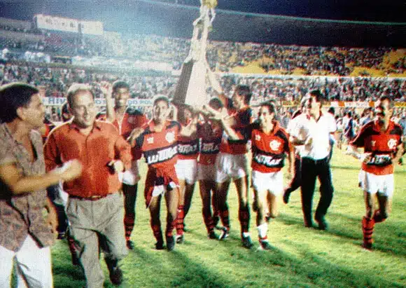BRASILEIRÃO 1992
O Flamengo é penta com goleada sobre
no seu rival carioca, o Botafogo!
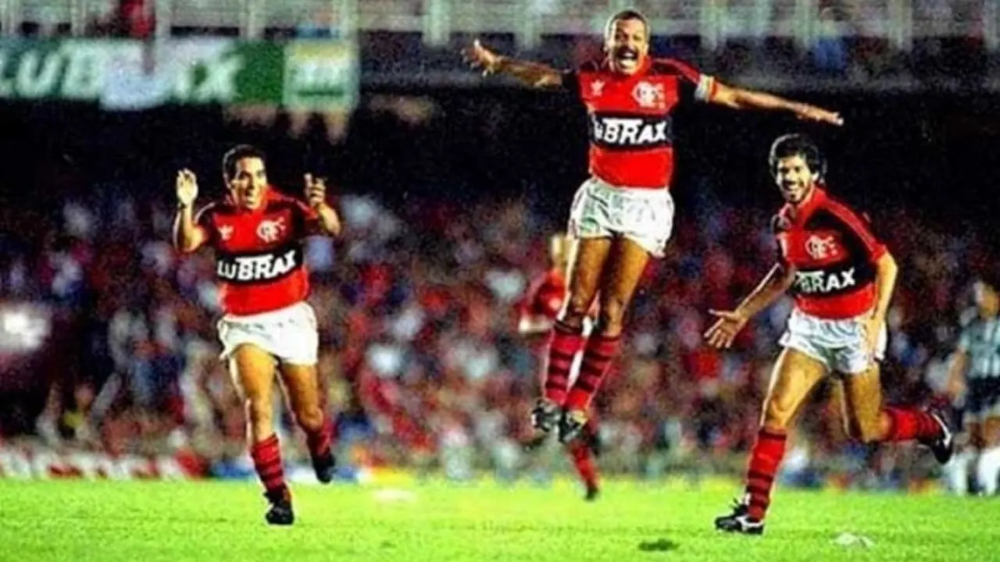COPA DO BRASIL 2006
Pela primeira vez o campeonato foi deciido
por dois times do mesmo estado, nesse confronto
histórico o Flamengo é campeão encima
do Vasco da Gama, o seu maior rival!

BRASILEIRÃO 2009
O primeiro título na era pontos corridos,
o Flamengo é hexa!
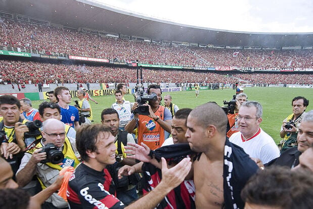COPA DO BRASIL 2013
O Flamengo é tricampeão da Copa do Brasil!

LIBERTADORES 2019
Com uma virada histórica o Flamengo é
bicampeão da Libertadores!
Gabigol foi muito deciviso fazendo dois gols!

BRASILEIRÃO 2019
O flamengo se torna hepta-campeão com
81 pontos e com 13 de diferença para o 2 colocado
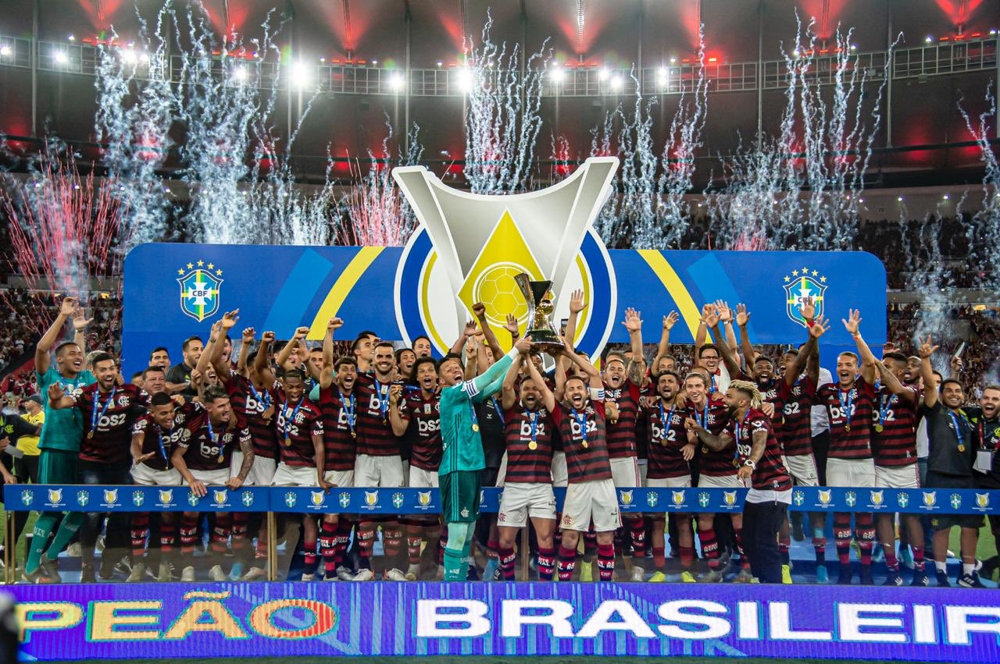BRASILEIRÃO 2020
pela primeira vez em 38 anos,
conquista o título em temporadas consecutivas
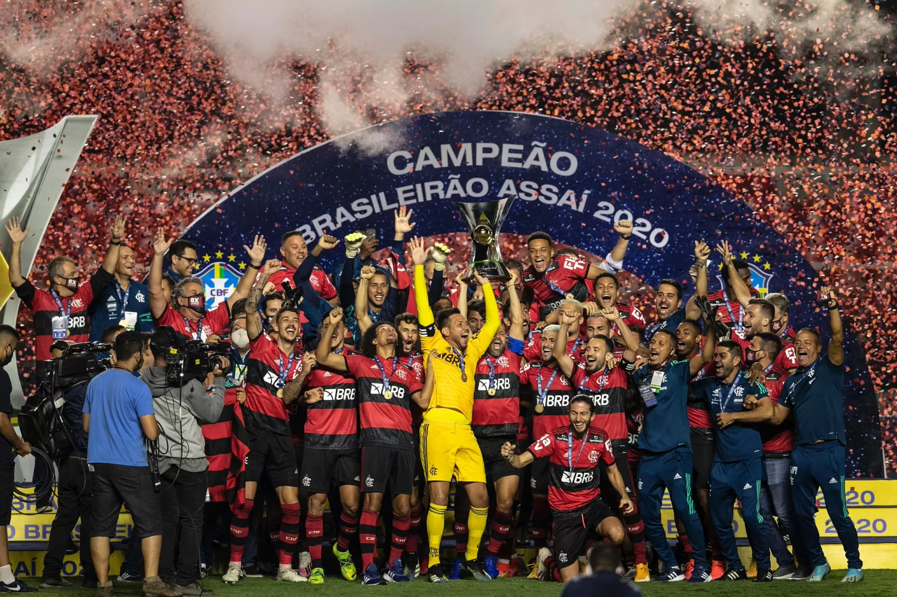LIBERTADORES 2022
Gabigol decidiu mais uma final!
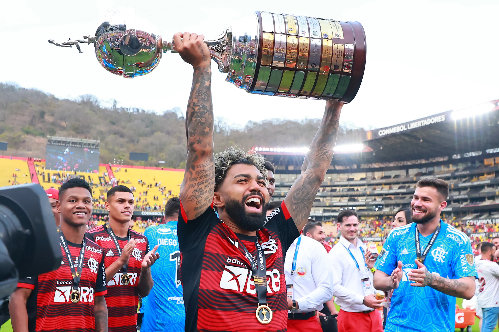COPA DO BRASIL 2022
O Flamengo vira tetracampeão!
ganhando nos penaltis!
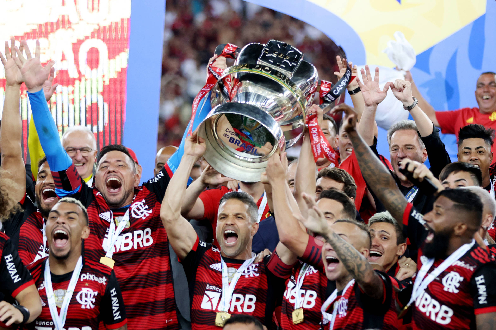COPA DO BRASIL 2024
Com golaço de gonzalo Plata, o Flamengo
é pentacampeão!
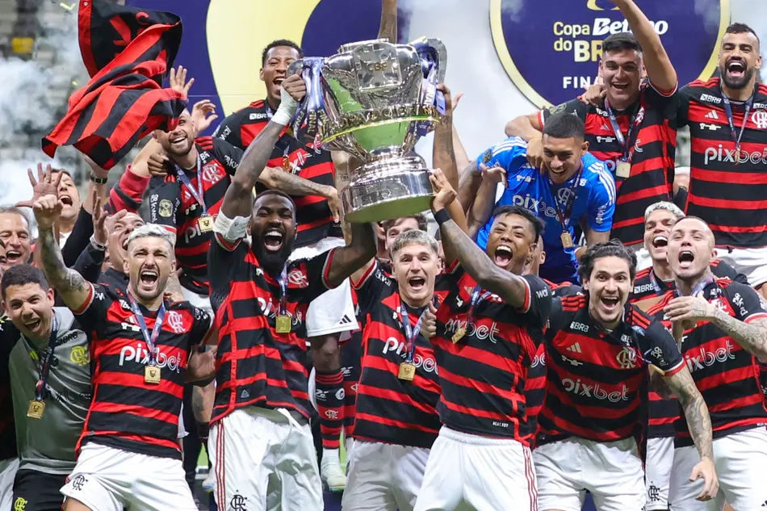